Recently. I’ve been dabbling once again into the ergo-split keyboard development/building rabbit hole and it came to mind that I haven’t written about the keyboard+layout that I’ve been using.
My current keyboard needs have changed, and I started looking for interesting new avenues to pursue, like the 5-way switches I discovered when I stumbled upon this keyboard named Fulcrum and the amazing one-hand 2x4 keyboard ARTSEY which is built on top of combos.
It’s been over a year since I’ve had my keyboard1 with a custom layout targeting my personal preferences: comfortable programming symbols and good layout distribution for writing English, Spanish, Catalan, and German (with all the äöüàèòéíóúßç at the finger tips). The layout in question is the following2:
I use Vial to flash my keyboard, and, as such, I’m limited to 4 layers max. Layers 0, 1, and 2 are heavily, used while Layer 3 is fairly empty since I haven’t really found a need for more keys.
Just to quickly state it, my objectives for the layout are:
This already poses some challenges. The first of them is “How can I type all the possible special characters for all the languages?” The easy answer is US International with accents. This is the “base” layout that my keyboard will target.
The reason in pretty simple. With a special combination of RightAlt and ,, I can write ç. Armed with this knowledge,
it is easy to see that our keyboard can output a special combo to produce a character like ç with a single key. In
the end, I move away of the “single-key” combo for some characters, but moved the relevant combo keys to comfortable
locations and just learned the couple combos by heart, which are mainly ç and ß. Nonetheless I still keep € to a
single key stroke (one and a half? since the €-key is placed in Layer 1 …)
We start with the following empty 3x5_2 layout (three keys per column, five columns, plus two thumb keys).
left-half right-half
[ ] [ ] [ ] [ ] [ ] [ ] [ ] [ ] [ ] [ ]
[ ] [ ] [ ] [ ] [ ] [ ] [ ] [ ] [ ] [ ]
[ ] [ ] [ ] [ ] [ ] [ ] [ ] [ ] [ ] [ ]
[ ] [ ] [ ] [ ]
I think it is fairly obvious that the major part of a layout is distributing the most frequent letters in the easiest to
reach spots. It is also fairly obvious that letters have some relationships between one another. For example: t, h,
and e, occur frequently together, so having them in comfortable places in the keyboard AND between one another is wise.
Enter problem 1: I want to write 4 languages. I used the table found in this Wikipedia Article
for English, Spanish, and German, and this and this for Catalan.
My main issue was not to know the most frequent letters, but to get a good idea of the least frequent ones. One example
is w. In Spanish and Catalan together, the frequency is a mere 0.07%3, while for German or English is at least 2%.
If you take into account different bi-grams and tri-grams (two and three letter combinations), the job is ever harder.
In the end, I decided to make my own weighted table ( I should probably include the table ). I decided that, roughly, I type like 50% of my words in English, 25% in Catalan, 15% in German and 10% in Spanish. I took the liberty to make Spanish percentage lower because the letter frequencies and n-grams of Catalan compared to Spanish are not THAT different.
After a lot of charts, tables, percentatges and google searches I ended up with three letter categories: frequent, infrequent and meh.
A, D, E, G, I, L, N, R, S and T with a total frequency across all languages of 65%,
(60% for english, 70% for german and 67% for Catalan and Spanish).J, M, P, Q, X and Z, where every letters has a frequency of 3% or less for any language and a
total frequency across all languages of at most 10%.B, C, F, H, K, O, U, V, W and Y, which have a total frequency of appoximately 25%.Some of the letters could have been moved from one category to another. For example
Yhas a mere 2% in English and Spanish whileMhas at least 3% frequency in German and Spanish. It would make sense to haveMin the Infrequent category rather than the Meh one. In the end. I only have 10 fingers, and certain n-grams pushed some letters up or down the ladder.
Not all fingers are created equal… Or maybe they are, I can’t say for sure. But I can say that not all fingers have the same range of motion and stregth. Here is a list of my preferences on finger strength and motions:
With the above preferences in mind I designed the following key weights. Please note that the inner columns have no weights because I want to use them for punctuation rather than letters. This way I can contain all major typing in the 4 central columns and only reach out when I need punctuation.
left-half right-half
[3] [1] [1] [2] [ ] [ ] [2] [1] [1] [3]
[0] [0] [0] [0] [ ] [ ] [0] [0] [0] [0]
[2] [2] [2] [1] [ ] [ ] [1] [2] [2] [2]
[ ] [ ] [ ] [ ]
Assinging the most frequent letters was rather easy. I took inspiration from ARTSEY, eventhough it is a one-hand layout, Engram, Colemak and specially from HandsDown which introduced to me the idea of separating the vowels in one hand and the most frequent consonants in the other.
I took special care to only have 10 letters in the Frequent category. This way I could map 8 to the homerow and the other 2 to whatever keys had the lowest weight.
With 10 keys assigned, the layout looks like this:
left-half right-half
[ ] [ ] [ ] [ ] [ ] [ ] [ ] [ ] [ ] [ ]
[R] [S] [N] [T] [ ] [ ] [A] [E] [I] [L]
[ ] [ ] [ ] [D] [ ] [ ] [G] [ ] [ ] [ ]
[ ] [ ] [ ] [ ]
The letters D and G could have been put on the top row and accessible with the Ring and Middle finger. I had a layout with them
in this positions to test, but I moved them down to make space for n-grams and favor inward rolls. This will make more sense with
the following letter group, the Infrequent category.
Following the previous assignment, we can try and divide this category into consonants and vowels. The most naive partition looks like this:
O, U and Y.B, C, F, H, K, V and W.Not bad, honestly. If we can shift two letters from the consonants group to the vowel group, we would be able to assign
the rest of the keys and call it a day. And after some thought, which keys to move is pretty clear. This is my reasoning for moving
F and W to the first group:
OF. This makes the decision pretty easy in my opinion.S, C and H in the consonant group, we could favor common n-grams like THE, CH, SH, and SCH.K, we could make CK pretty easily.W, V and B and honestly I did it through gut feeling. I liked keeping B and V near one another,
and that also made BR easy, and n-grams with W are not that popular… So by process of elimination,
I yeeted W to the vowels group… Yes!Here is the layout with the Infrequent category:
left-half right-half
[ ] [C] [H] [K] [ ] [ ] [F] [O] [U] [ ]
[R] [S] [N] [T] [ ] [ ] [A] [E] [I] [L]
[ ] [V] [B] [D] [ ] [ ] [G] [Y] [W] [ ]
[ ] [ ] [ ] [ ]
Notice that I deliveretly assignet O and U with the idea to make QUO, QUE, QUA and QUI which are very commont
tri-grams in both Spanish and Catalan. Also, notice that I put C and V in the Ring Finger, because I plan on using
home-row modifiers similar to Miryoku and that would give me acces to
Ctrl+C and Ctrl+V pretty much for free, but more on that later.
With the idea of C and V being very close, I added X and Z to the left-hand side. This way I could keep some of
my muscle memory from QWERTY. The rest of the letters, M, J and P, I honestly put them in the current position after some trial and error.
Lacking two more keys, I decided to put the two least frequent letters behind a combo. And that made me choose Z and J. As
to why I choose VB to make Z and WY to make J is easy. I could not find any word that I use on my daily basis that uses this two
letters one after the other. This way I do not trigger the combos by mistake.
Here is the layout with the Meh category. Do not let the rather hand-waved explanation fool you, I spend some weeks tweaking the final position but and this point what is more important is comfort of typing and not necessarly having the keys in easy to reach positions.
left-half right-half
[X] [C] [H] [K] [ ] [ ] [F] [O] [U] [Q]
[R] [S] [N] [T] [ ] [ ] [A] [E] [I] [L]
[M] [V] [B] [D] [ ] [ ] [G] [Y] [W] [P]
^-Z-^ [ ] [ ] [ ] [ ] ^-J-^
At this point the base layer is done. The only missing pieces are punctuation, accents and control flows? (I dunno how to name Space, Enter, Tab and Backspace…).
With some tests and adjustments I ended up with:
left-half right-half
[X] [C] [H] [K] [`] [-] [F] [O] [U] [Q]
[R] [S] [N] [T] ['] [;] [A] [E] [I] [L]
[M] [V] [B] [D] [,] [.] [G] [Y] [W] [P]
^-Z-^ [s] [e] [t] [b] ^-J-^
where:
- `s` is Space
- `e` is Enter
- `t` is Tab
- `b` is Backspace
There is really not a “statistical” approach to this. I just winged it and try writing in it. The layout that I have now is what stuck. I tried for some time having the accents in the right hand, but it quickly made writing very very painful. It is much easier to balance the action of clicking the accent key with the left hand and reaching for the vowel with the left hand. This way I can type äöüàèòéíóú by pressing the desired punctuation with my left index and the clicking the vowel.
I need to search through my documents to be able to write what really happened. I remember reading some Reddit posts about programming and number layers. I tried several configurations and decided to keep the current one just because I got used to it. This is definitively an area to improve and change, more on that in below.
Overall I am very happy with current layout. I needed about four weeks to get used to it, and that is counting the minor changes I was doing on a weekly, if not daily, basis. (my decision to use Vial REALLY payed off).
Unfortunately I hit a plateau with regards to Layers. I have the first two and a half layers memorized, but for the love of what is
dear I cannot keep Layer 3 in mind. Remapping Helix to have aeil as my navigation keys really helped me to at least memorize
Left, Down, Up and Right, but the rest of the layer I do not use on a regular basis.
Moreover, I really miss not having three thumb keys. In the beginning I did not want to make such a big jump going from a normal 100% keyboard to an Ergodox and then to a Ferris Sweep. I found myself not using the quatrillion thumb keys that an Ergodox has, but after some time I believe that it was due to its inefficient position in regards with my preferences.
Finally, I’ve been studying Japanese for almost a year, and I would really like to have a keyboard that lets me write Kanas without overstreching. I’m designing a new keyboard which for now I’m calling Chordy and I plan on using 5-way switches, hopefully it makes for a better keyboard.
My keyboard is a slightly modded Ferris Sweep with a stronger pinky stagger and splay. ↩
As you can see, I squeezed in Z and J as combos. I thought it would be bothersome, but IMHO the experience has been increadibly good. ↩
All percentatges are estimates. I do not care about 6 point precission. A rought idea is good enough for my use case. ↩